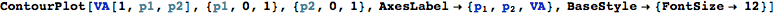

Kojima’s method applied to a weird two locus genetic model
Define a weird genetic model
Okay, so we make a model where there are two loci and thus nine genotypes. we can make a model that looks somewhat normal, but actually turns out to be weird.
We need to make these vectors of possible marginal genotype frequencies in order to flesh the thing out. Mathematicas TensorProduct[] function woudl allow us to generalize this to arbitrary numbers of loci. Perhaps there is an automatic way to do this.

This is now a matrix of the contributions of each genotypic class to the population mean. To get the populaiton mean, we have to this sum up. We can do this by using Total[] or by crossproduct with vector of ones.

Derive some variance components using Kojimas notation
Additive variance
We have two loci, so the additive variance will involve taking the first derivative of the populaiton mean at both loci and multiplying respectively by the heterozgyosity at that loci.

Dominance variance
Wow, that additive variance looks strange huh! But, if you change the original model to a more basic form, you will see that it is correct. Now we do the dominance.
Additive by additive epistatic variance

Narrow sense heritability, aka the percent of total variance that is due to additive variance